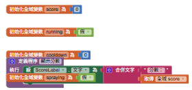
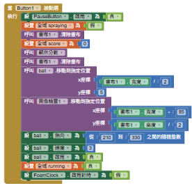
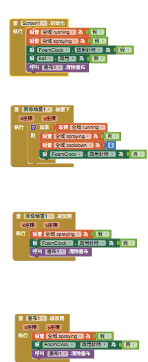
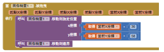
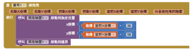
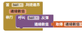
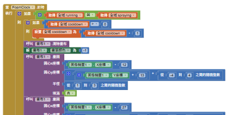
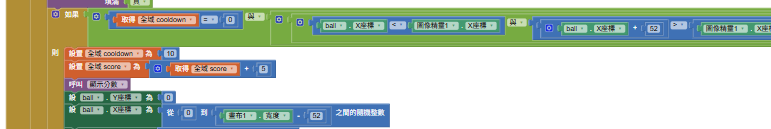
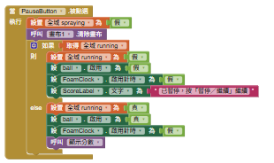
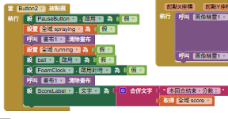

05 噴蚊子｜原始積木＋文字補充
開始 → 移動噴劑 → 按住噴霧 → 命中加分 → 放開停止 → 結束
清楚圖片保留，過長的重複繪圖用代表段與文字說明。截斷內容不補畫成原始積木，也不混入其他版本功能。
01 變數與分數

這段程式在做什麼？- score記錄分數；running控制遊戲是否進行；spraying記錄是否正在按住噴劑；cooldown控制兩次命中的間隔。
- 「顯示分數」程序將文字與score組合到ScoreLabel，不會自行增加分數。截圖中變數與程序稍有重疊。
02 按開始：蚊子開始移動

這段程式在做什麼？- Button1啟用暫停按鈕，將spraying設假、清除畫布、score歸零，呼叫顯示分數。
- 把蚊子ball放回畫布上方，把噴劑移到右側，設定蚊子方向為210～330之間的隨機整數、速度為3並啟用。
- running設真，但FoamClock仍關閉。因此開始後蚊子會動，還沒有噴霧。
03 初始化、按住噴、放開停

這段程式在做什麼？- Screen1.Initialize把running、spraying設假，停用蚊子及FoamClock，清除畫布。
- 噴劑圖像精靈1.TouchDown：只有running為真才把spraying設真、cooldown設0、啟用FoamClock。
- 噴劑TouchUp與畫布TouchUp都把spraying設假、停用FoamClock並清除畫布，避免放開後還一直噴。
- 學生核心任務：理解並補上「按住→啟動」「放開→停止與清除」；對照自己模板中的對應事件。
04 移動噴劑與蚊子反彈



這段程式在做什麼？- 噴劑與畫布的Dragged都把噴劑移到當前X−36、當前Y−58，再MoveIntoBounds。這是以觸碰點定位，不是水果歸位的前後位移差算法。
- 這兩段可見積木沒有running條件；不要把「只能遊戲中拖曳」講成此圖已有的功能。
- 蚊子ball.EdgeReached把碰到的邊緣交給Bounce，讓它反彈；這段不是固定只上下移動。
05 泡泡效果：看代表段，其餘用文字

這段程式在做什麼？- FoamClock.Timer先檢查running且spraying；cooldown大於0就減1。
- 清除舊泡泡後，在噴劑左方一系列位置畫實心圓。X逐步往左，Y加入隨機偏移，越遠的偏移範圍越大，形成散開的噴霧。
- 可見半徑為1～3的隨機整數。後面許多DrawCircle重複同樣模式，原圖完整保留，不要求學生照抄每一顆泡泡。
- 泡泡是視覺回饋；是否加分由另一段位置判斷決定，不是逐顆泡泡碰撞計分。
06 命中與加分：截斷處明確標示

這段程式在做什麼？- 圖中可見：cooldown＝0且後續位置條件成立，才進入命中分支。位置判斷的右側被截掉，不能據此確認全部命中範圍。
- 命中後cooldown設10、score加5、呼叫顯示分數；接著把蚊子Y設0、X設為畫布可用寬度中的隨機位置。
- 10代表計時事件倒數次數，不是10秒；實際間隔還取決於FoamClock的時間設定。每次重新按下噴劑又會把cooldown設0。
- 這批截圖呈現的是命中後移回上方；沒有提供變表情、ReactionClock或觸碰音效積木，不能當作已在此版本實作。
07 暫停、繼續與結束


這段程式在做什麼？- PauseButton先停止噴霧並清除畫布。若原本running為真，就改假、停用蚊子與FoamClock並顯示暫停。
- 若原本暫停，就把running設真、啟用蚊子、保持FoamClock關閉並恢復分數顯示；繼續後仍須按住噴劑才噴。
- Button2停止running、spraying、蚊子與FoamClock，清除泡泡並顯示本回合分數。這批沒有接滿五次自動完成的條件。
08 課堂修改與驗收
這段程式在做什麼？- 先驗證：未開始沒有泡泡；開始後蚊子移動；按住才噴；放開立即清除；暫停後蚊子停止；結束後不再加分。
- 學生先補按住與放開事件，再選一項修改：蚊子速度，或泡泡半徑。一次只改一個設定並試玩。
- 提問：為什麼放開時除了spraying設假，還要關閉計時器並清除畫布？為什麼畫泡泡與加分要分開？
- 既有MosquitoStudentV1模板來自教師V4，可能含表情與音效等本批未展示功能；本頁以此次截圖為主，不宣稱兩者逐段完全一致。
- 本次只更新教材，沒有修改APP或重新進行手機測試。
全部原始截圖
原圖1
原圖2
原圖3
原圖4
原圖5